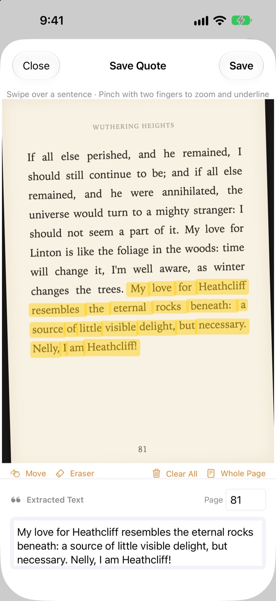
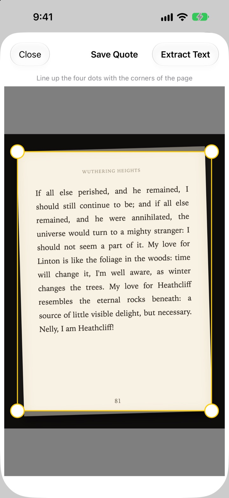
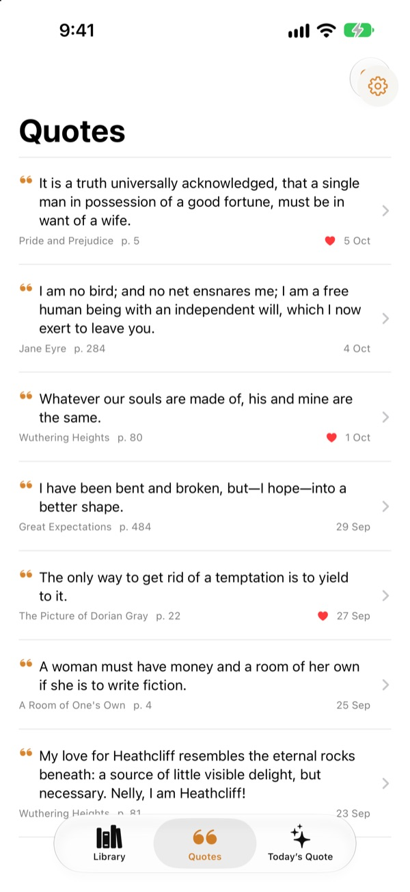
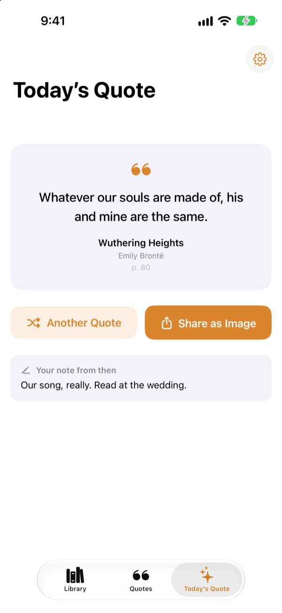

Underline a book
without a pen
Photograph the page, run a finger over the sentence you love, and only that sentence is saved as text. The book and page number come with it.
Every feature is free, with no adverts.

Have a go
Run a finger or your mouse over any sentence on the page below. Only the words you cross end up on the card.
Where do the good lines end up?
It's a library book, so you can't write in it. A photo of the page sinks among thousands in your camera roll. Type it into a notes app and the title and page number rarely come along. Bookmark Shot keeps the sentence, the book and the page with two gestures: snap, then swipe.
Wonky photo, straight page
After you photograph a page, line up the four corners and even a slanted shot is flattened like paper. Sharper letters mean better recognition.
Photos already in your library work too.

Every quote in one place
Your books sit in a library of covers and your quotes gather in one list. Search by sentence, note or book title, and heart the ones you'd like to read again.
Add a book with a single cover shot. The title and author are read for you, and the ISBN too if the barcode on the back cover is in view.

Rediscover lines you'd forgotten
Today's Quote brings back one of your saved quotes every day, along with the note you left. Keep it on your Home Screen or Lock Screen with a widget.
Love it? Turn it into a paper-style card and share it.

Three steps to get started
- 1
Photograph the cover
The title and author are filled in. Change them before saving if you need to.
- 2
Photograph the page
Line up the four corners and it straightens out.
- 3
Swipe the sentence
The page number is found and saved with it.
Tools on the highlight screen
- Swipe a finger
- selects only the words you cross
- Pinch
- zooms in for a more precise swipe
- Move
- drags a zoomed page around
- Eraser
- takes swiped words back out
- Clear All
- removes every selected word
- Whole Page
- keeps all the text on the page
- Page field
- the page number it found, editable
With VoiceOver, double-tap a line to add or remove it.
Every feature is free
Free
- Add books from the cover, ISBN from the barcode
- Page straightening and finger highlighting
- Automatic page numbers
- Library, quote search and favourites
- Today's Quote with Home Screen and Lock Screen widgets
- Share as a card image
- iCloud sync
Support the developer
- Leave a small tip from Settings, if you fancy it
- Tips don't unlock anything. The app is the same either way
No adverts, no subscription.
Questions
Are my photos or quotes sent anywhere?
No. Text recognition runs entirely on your device with Apple Vision, and your photos and quotes never go to a server. It works offline too. See the Privacy Policy below for details.
Which languages can it read?
Text recognition is done by iOS on your device. It reads books in Korean, English, Japanese, Chinese, Russian and most Western European languages, and on recent versions of iOS also Thai, Vietnamese, Turkish, Indonesian, Polish, Czech, Dutch and the Nordic languages. Greek can't be recognised yet.
How do I pick just the sentence I want?
After you photograph the page, run a finger over the sentence as if using a highlighter, and only those words are selected. Pinch to zoom for precision. There's also an eraser, Clear All and Whole Page.
The title or author came out wrong.
Cover recognition guesses from the size of the lettering, so very decorative covers can catch it out. You can correct the title and author before saving the book.
The page number is wrong.
It's read from the numbers along the edge of the photo. Just correct it in the page field before saving.
Can I see my quotes on more than one device?
Yes. If you're signed in to iCloud with the same Apple Account and iCloud Drive is turned on, your books and quotes sync automatically.
How do I add the widget?
Touch and hold the Home Screen, tap Edit > Add Widget, and choose Bookmark Shot. For the Lock Screen, touch and hold it, then tap Customise. Today's Quote appears there.
The camera doesn't work.
Check Settings > Bookmark Shot and make sure camera and photo access are allowed. Taking photos needs a real iPhone.
What do I need?
An iPhone running iOS 17.0 or later.
How do I get in touch?
Send feedback from the app's Settings (gear) screen or email us at the address below. We usually reply within two or three days.
Questions or feedback? Write to leeo@kakao.com.